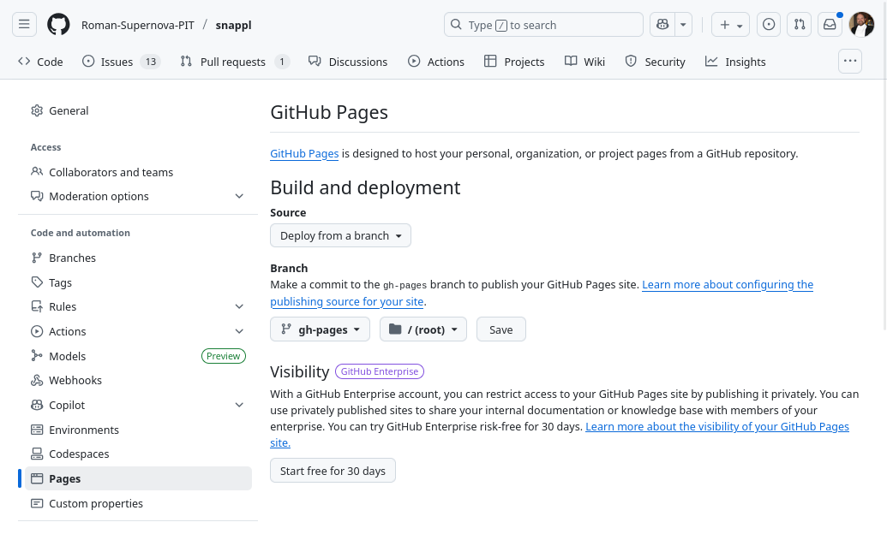

Documenting your Package¶
There are two main ways to document your project, both of which are essential: Docstrings and Narrative Documentation.
Docstrings¶
First, public functions, methods, and classes
in your package should include docstrings, which are strings
attached to those objects which the user can access interactively
using e.g. help() and which can also be retrieved by automated
tools. See PEP 257 - Docstring Conventions
for a high-level overview of what docstrings are. We recommend adopting
the numpydoc
format for docstrings. An example of such a docstring is:
def foo(var, long_var_name='hi'):
"""A one-line summary that does not use variable names.
Several sentences providing an extended description. Refer to
variables using back-ticks, e.g. `var`.
Parameters
----------
var : int
The type above can either refer to an actual Python type
(e.g. ``int``), or describe the type of the variable in more
detail, e.g. ``(N,) ndarray`` or ``array_like``.
long_var_name : {'hi', 'ho'}, optional
Choices in brackets, default first when optional.
Returns
-------
out : type
Explanation of `out`.
"""
These docstrings should be included in the Python files alongside the Python objects they document.
Narrative Documentation¶
Second, you should write a set of narrative documentation which functions as a
user guide, such as http://docs.astropy.org or http://docs.sunpy.org.
This package template will create the basis for this. You will find
that in the docs directory under the top level of your repo. You
will want to edit the following files to make them correct for your
package:
installation.rst– with luck, the stuff that is there already is sufficient, but you should review it.usage.rst– This is where you will write your main documentation.index.rst– This one may be OK as is, but you will need to edit it if your documentation is long (see below).
If your documentation is short enough, you can write it all on the
usage.rst page. If it’s long, you might want to divide it into
sections. Give each section its own .rst file. Then, list the
files you’ve added underneath the ..tocktree:: directive in the file
index.rst.
All of these files are in Sphinx reStructuredText format. If you haven’t used Sphinx before, you maybe interested in their Getting Started guide.
Including docstrings in the narrative documentation¶
As part of the narrative documentation, it is also common practice to include an Application programming interface (API) page which lists the available classes, methods, and functions in your package. Thankfully, if you’ve defined your docstrings as described in Docstrings, then this can be automated using the sphinx-automodapi package. See the documentation of that package for more details, but a repo created from this package template should already be set up to automatically include this.
First, you need to make sure to declare which classes and variables you want to include in the documentation. In each source file, make sure to include a variable __all__ which is a list of classes and functions that you want documented. (Really, this is a list of things that get imported from your package if you do from my_module import *; see the Python modules tutorial. Of course, you should never do from <anything> import *, but Sphinx does it to find which things in your module need to be documented.) For example, snappl might have the following at the top of snappl/image.py:
__all__ = [ 'Image', 'Numpy2dImage', 'FITSImage', 'OpenUniverse2024FITSImage',
'ManualFITSImage', 'RomanDatamodelImage' ]
to indicate the classes that should be documented.
If you don’t include an __all__ variable, then way too much gets included in the documentation; everything you import with something like from foo import bar will be included as part of your package’s documentation, which of course isn’t right. You may also want to omit some internal functions that aren’t intended for use outside of the module.
In order to actually include the API documentation, you need to put some
directives somewhere in your documentation. You may wish to put this in
docs/index.rst, or (better) you may wish to make a separate docs/api.rst
documentation file that you then link to in index.rst by just adding
the line api.rst after changes.rst underneath the
.. toctree:: directive.
Wherever you put your API documentation, for each module whose documentation you want to include, add a line:
..automodapi:: modulename.submodulename
So, if your module (i.e. the top level thing you import) is
snpit_utils, and you want to include documentation for
snpit_utils.config, you’d just put the line:
..automodapi:: snpit_utils.config
where you want it to show up.
WARNING : If you build the documentation locally (see Previewing
your documentation), it will create a subdirectory underneath docs
with a .rst file for each class or function whose api documentation
was generated. Do not add these to your github archive! You may
wish to edit the .gitignore file at the root of your checkout to add
these working directories.
Declaring dependencies for documentation¶
To make it easier for contributors to get set up with the dependencies
required to build the documentation, as well as to make it easier to
configure automated builds (whether for ReadTheDocs
or tox), you should define an [project.optional-dependencies] section in
your pyproject.toml file named docs which lists the dependencies
required to build the documentation (not including dependencies already
mentioned in dependencies):
[project.optional-dependencies]
docs = [
"sphinx",
"sphinx-automodapi",
"numpydoc",
]
This will then allow contributors to type:
pip install -e .[docs]
to install the package in developer/editable mode along with the documentation dependencies.
Previewing Your Documentation¶
You should make sure you can get this to work. If you can’t, then it’s likely not to work on github actions either. (Getting it to work locally is a probably-necessary, but not sufficient, condition for it working on github actions.)
Getting set up to build your documentation¶
If you want to build your documentation locally, you need to make sure you’re in an environment with the right packages installed. This includes the package whose documentation you want to build. You may just do this in the environment you’re working in. However, if you want to have a contained environment to do this in (e.g. if you don’t want to install the current state of the package you’re working on into your environment), then you can make a new environment at the top level of your checkout with:
python -mvenv venv
source venv/bin/activate
The “activate” command puts you in that environment; your prompt should
change so that it has (venv) at the beginning to let you know you’re
in this environment. When you’re ready to leave it, just run
deactivate.
To install the things you need, run, at the top level of your checkout:
pip install -e .[build,docs]
Next, install the current working version of your package into your current environment:
pip install -e .
Building and viewing the documentation¶
Now that you’re set up to build the documentation, just go into the
docs subdirectory of your checkout and run:
make html
That will create a subdirectory _build/html underneath the docs
directory. Open the file index.html in that subdirectory in your
web browser, and you should see a preview of your documentation.
(NOTE: In my experience, sometimes when I run this, I get an error, and then when I run it a second time, the error goes away. Also try:
make clean
make html
and see if that works.)
If it doesn’t work because of a missing import¶
It may be that the requirements listed in pyproject.toml are not sufficient to actually run your package, or even import modules from your package. This is the case for phrosty, for example, which requires a version of roman_imsim pulled from Troxel’s git repository, not the one that’s on PyPI. That repository is in the SNPIT docker image (which is, at least currently, the only way it’s possible to run, at least, phrosty).
If this is the case for your package, then you have more work to do in order to get your docs to build. Edit the file docs/conf.py, and search for “Getting docs to build outside the SNPIT docker image”. Try uncommenting the few lines underneath that. That adds your repo to the python path, so it will be able to find your module there even if it’s not installed. It also adds roman_imsim to a list of modules that sphinx knows aren’t importable, and so won’t try to import. You may need to add other things to the things_to_mock list.
Example¶
As an example, ROB PUT IN SNPIT_UTILS EXAMPLE
Automatically deploying your documentation to github pages¶
The package template includes a github workflow that will automatically use sphinx to build documentation from things in your docs subdirectory. The results are put on a branch, gh-pages, in your repo. (Do not merge this branch with your main branch, or any other working branch, because all of your code has been deleted from it!)
To enable automatic deployment, go to the settings for your github archive. In the left sidebar, in the “Code and automation” section, find “Pages”. Under the section “Branch” on that page, select the branch “gh-pages”. (If that branch is not there, then your documentation failed to automatically build. See “Debugging…” below. Finally, click “Save”.
Thereafter, next time you merge to main (or otherwise cause the documentation deployment workflow to run), the documentation should be updated at https://roman-supernova-pit.github.io/<your_repo_name>/.
Debugging automatic documentation on github pages¶
At your repo home page, click on “Actions” at the top. Find in the let sidebar, under “Actions”, “Deploy Package Documentation to…”. Click on that link. That will show you all the times this workflow has been run. You can click on a run to see any errors, and you can manually launch this workflow on any branch. WARNING: if you launch this workflow on a branch other than main, that branch’s documentation is what will be deployed to github pages! While in development and test mode, this is not a big deal, but as we get close to production we’re going to want to be very careful with this.
Add plots to your documentation¶
A plot is worth many words, and sometimes documentation can demonstrate the uses and advantages of using a given package much more efficiently than narrative docs. Matplotlib, for example, has made this quite straightforward with the plot directive.
To add a plot to your Sphinx documentation, add the following string to the
extensions list in your docs/conf.py file:
extensions = [
... # preserve your other extensions here, then add:
"matplotlib.sphinxext.plot_directive"
]
To make use of this extension, you will also need to add matplotlib to your
tox.ini file:
deps =
# preserve your other deps here, then add:
matplotlib
Now you can add plots to your Sphinx docs by adding a block like the following to your narrative docs:
Here's a plot:
.. plot::
import matplotlib.pyplot as plt
x, y = [1, 2, 3], [4, 5, 6]
plt.figure()
plt.plot(x, y)
By default, sphinx and matplotlib will render the figure defined by the
Python code in the .. plot:: block, without the source code. Full documentation
for the configuration settings for the plot directive can be found in the
matplotlib docs.